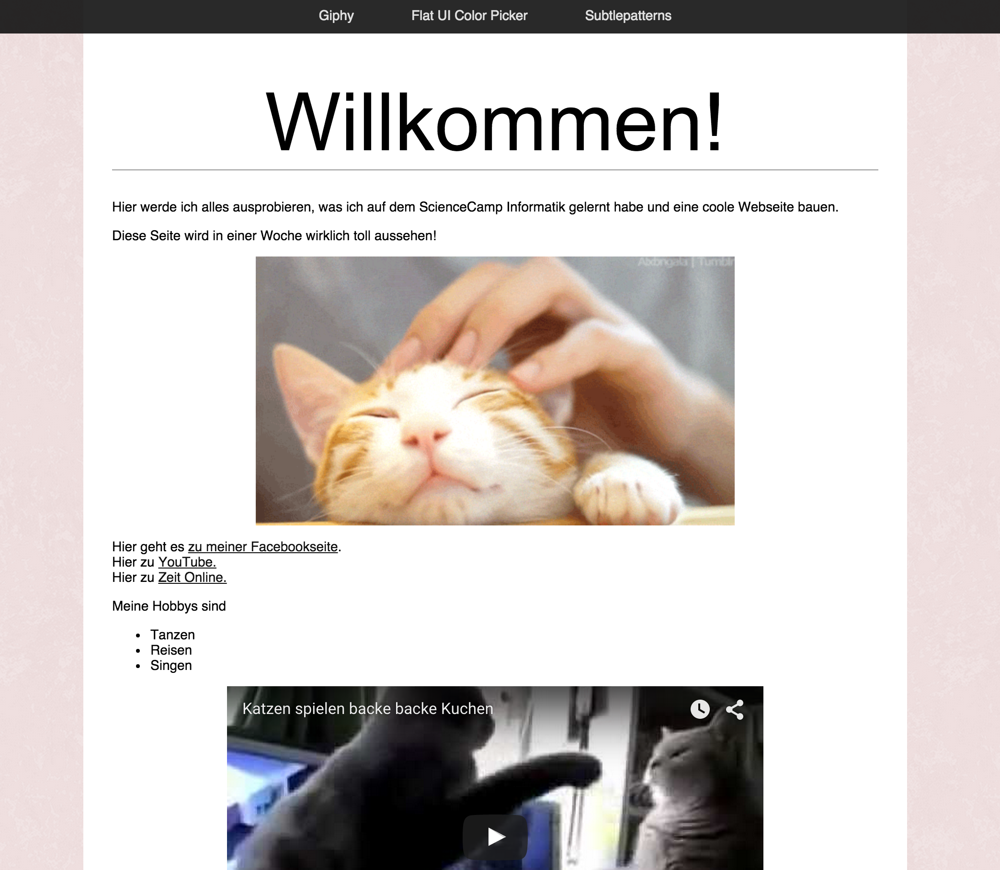

Wir haben ein Webseite und sie sieht schonmal recht gut aus! Das Design lässt allerdings noch ein bisschen zu wünschen übrig. Um Webseiten zu designen kann man CSS benutzen. Eine CSS-Datei ist eine Datei, in der man Anweisen zum Design geben kann. Zum Beispiel kannst du dort angeben, welche Hintergrundfarbe oder Textfarbe die Webseite haben soll.
Erstelle zuerste einen neuen Ordner namens style. In diesem Ordner erstellst du eine leere Datei mit dem Namen style.css.
Dann fügst du im head-Bereich deiner Webseite die Information ein, dass wir in style.css den Style der Webseite festlegen werden:
<link rel="stylesheet" type="text/css" href="style_template.css"/>Der Aufbau eines CSS sieht so aus:
Element_das_ein_Styling_kriegt {
Attribut_1: Wert_für_Attribut_1;
Attribut_2: Wert_für_Attribut_2;
}Eine Übersicht über alle möglichen Attribute gibt es hier.
Wenn wir also zum Beispiel die Hintergrundfarbe der gesamten Webseite ändern wollen, schreiben wir folgendes in die CSS Datei:
body {
background: red;
}Wenn du die Farbe genauer spezifizieren möchtest, brauchst du einen bestimmten Code für die Farben. Auf http://www.flatuicolorpicker.com/ findest du eine Menge Farben und deren Codes. Die Codes bestehen immer aus sechs Zeichen und müssen mit einem # anfangen. Zum Beispiel:
body {
background: #FDE3A7;
}Statt einer Farbe kannst du auch Bilder benutzen:
body {
background-image: url(../bilder/subtlepatterns/pink_rice.png);
}.. heißt übrigens, dass man in der Ordnerstruktur einen Ordner hoch gehen muss und dann in den Ordner bilder etc.
Eine tolle Seite zum Suchen nach Hintergrundbildern ist http://subtlepatterns.com/.
Such dir einen Hintergrund für deine Webseite aus.
Schriftart, -farbe, -größe und -ausrichtung bestimmt man mit
color: #111111;
font-family: Helvetica;
font-size: 14px;
text-align: left;Die Schriftgröße kannst du mit einer festen Anzahl an pixeln setzen. Du kannst sie aber auch relativ zu der Standardgröße (die Größe, die im Body genutzt wird) setzen. Wenn du zum Beispiel die Größe im body auf 14px setzt und in der Überschrift eine Schrift haben willst, die vier mal so groß ist, schreib:
font-size: 4em;Style die Schrift im Body und für die h1 Überschrift
Vergleicht man unsere aktuelle Webseite mit unserem Ziel, dann wollen wir den Inhalt unserer Webseite zentrieren und einen anderen Hintergrund haben. Jetzt kommt unser DIV ins Spiel!
Wir wollen nämlich allem, was im Div ist
Dazu geben wir dem Div erstmal einen Namen. Dafür gehen wir zurück in die HTML-Datei und ändern
<div>
...
</div>um in
<div class="inhalt">
...
</div>Jetzt ist unser DIV ein DIV der Klasse “inhalt” und wir können die Breite und den Hintergrund wie folgt festlegen:
.inhalt {
background: white;
width: 800px;
}Zentrieren geht mit
margin: 0 auto;Leider ist es etwas unschön, dass es keinen Rand zwischen dem DIV und dem Text gibt. Das kann man mit einem sogenannten padding ändern. Ein Padding wird mit 4 Werten angegeben: Der Abstand nach oben, nach rechts, nach unten und nach links (also im Uhrzeigersinn).
Dein Padding kann z.B. so aussehen:
padding: 40px 30px 60px 30px;Style deinen Inhalt, sodass er dir gefällt.
Was jetzt noch fehlt, ist eine schöne Menüleiste, wie in unserer Demo:

Die Menüleiste sieht sehr verdächtig nach einem neuen DIV aus!
Füge ein neues DIV mit einer Liste vor dem restlichen Inhalt in die HTML-Seite ein. Gib dem DIV die Klasse menu und setze ein padding.
Jetzt wollen wir das DIV stylen.
Gib dem Menu eine dunkle Hintergrundfarbe und setze die Schrift auf eine helle Farbe.
Nun wollen wir die Listenpunkte verschwinden lassen. Außerdem möchten wir den Text nicht untereinander, sondern nebeneinander. Dafür kannst du folgende Attribute setzen:
.menu ul {
display: inline-block;
list-style: none;
}und
.menu ul li {
float: left;
}Jetzt ist der Text zwar nebeneinander, aber es ist viel zu nah und klebt sofort am vorherigen Text. Dafür benutzen wie wieder ein padding!
.menu ul li {
padding: 8px 25px;
}